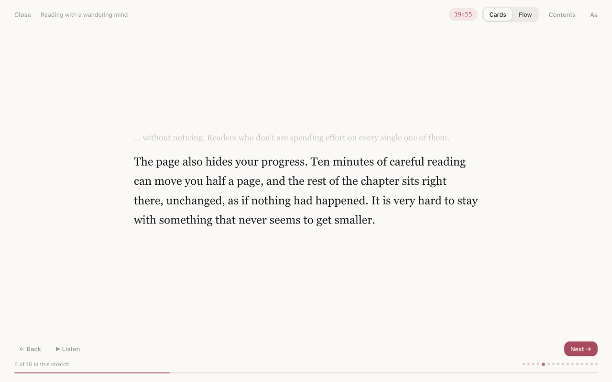
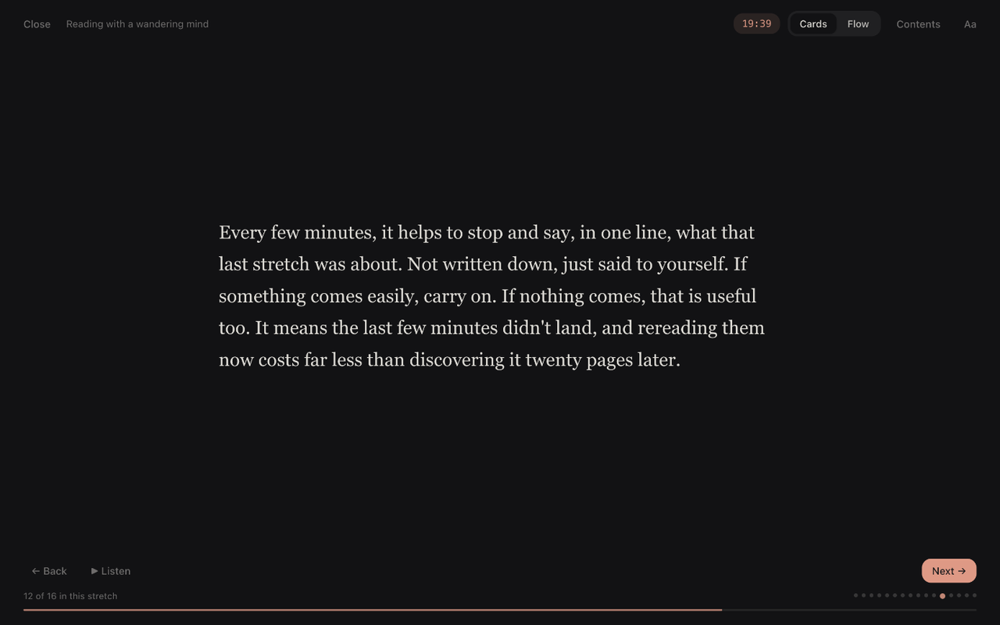

Engrossed for Chrome
Read long articles without losing focus.

Click the Engrossed button on any article and it shows a few sentences at a time, with nothing else on the screen. Click, or press Space, and the next few appear. It breaks at the end of a sentence, and it remembers your place in each article.
- A few sentences at a time, or the whole article with everything but your place dimmed.
- In longer articles, a pause every few hundred words to say in one line what you just read.
- An optional reading timer, a list of sections to jump to, and read aloud.
- Light and dark themes, and your choice of font and text size.
- No account, no servers, no tracking. It only runs when you click it.

An Engrossed app for iPhone, iPad and Mac, for books and PDFs, is on its way. No subscription. Privacy · Contact · Engrossed